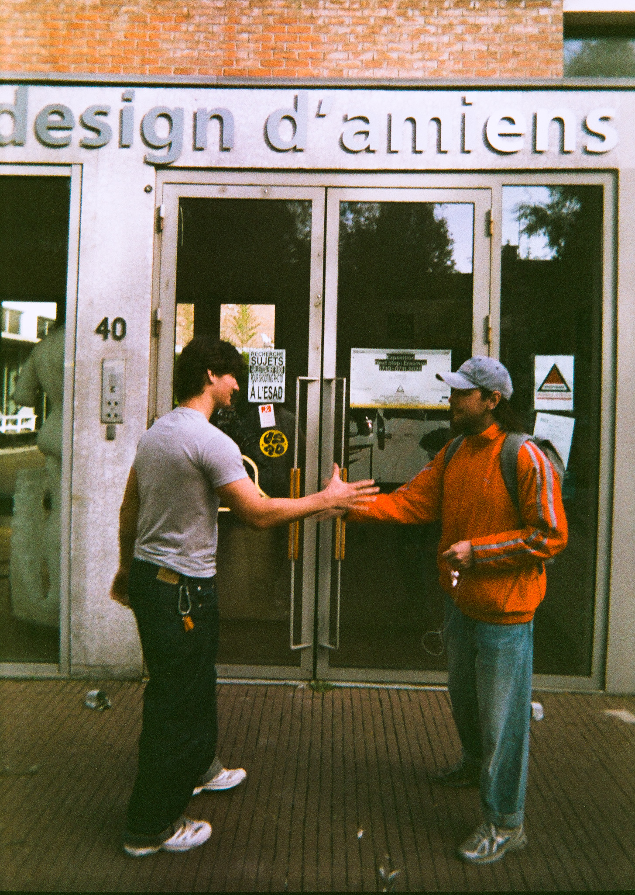
Ce projet est une série évolutive de photos que je prends avec des appareils jetables. J'aime cette idée que l'appareil complet prenne le rôle de la pellicule.
De plus je ne prend que des appareils dont les pelliclues sont censés être perimées depuis des années. J'aime avoir la surprise du rendu des photos après des années pendant les pellicules ont attendues d'être utilisées.
Je photographie tout au long de l'année, des scènes qui font de l'école un lieu chaleureux, où on vit des moments particuliers, et non seulement un lieu d'étude.
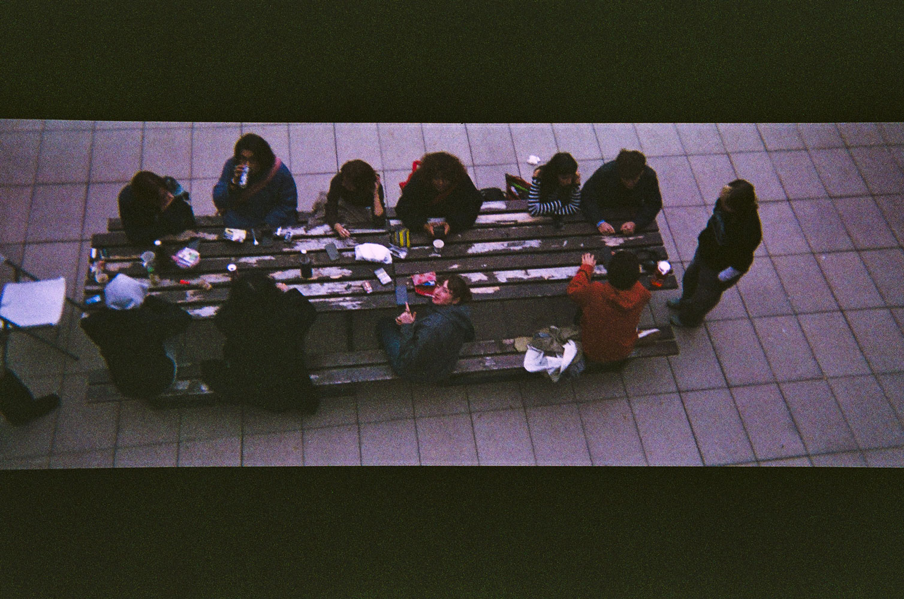
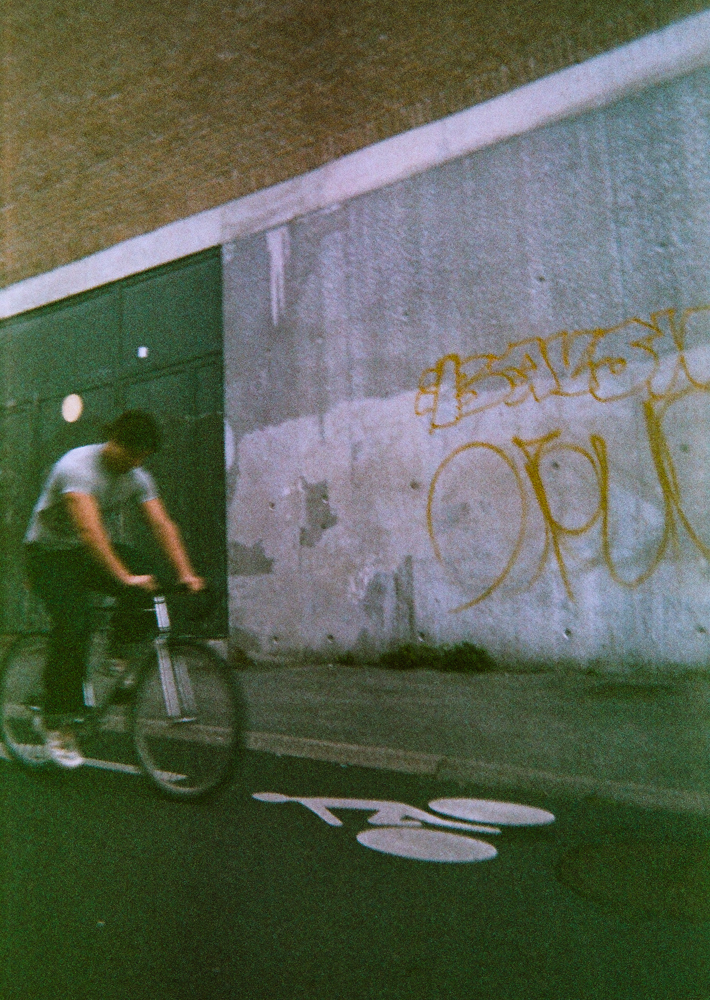
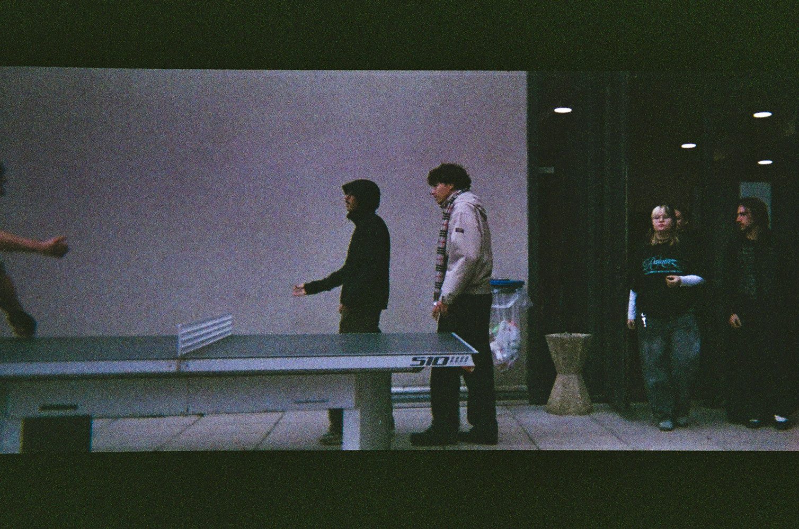
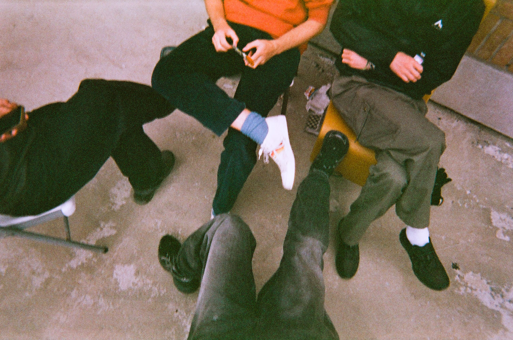
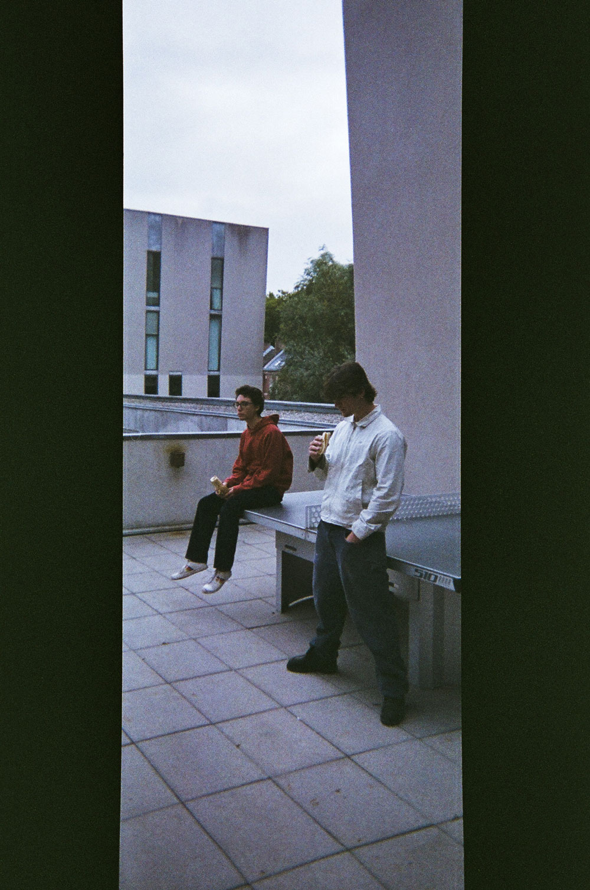
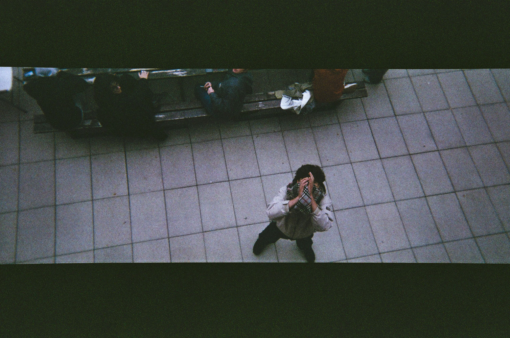
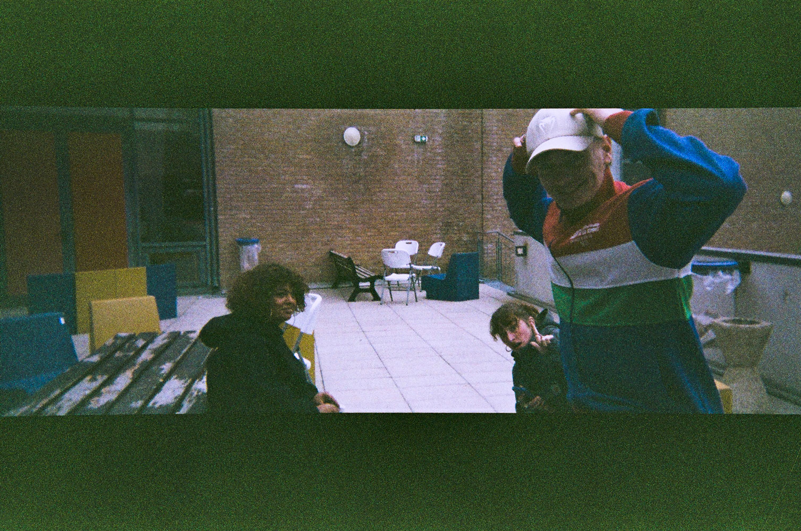
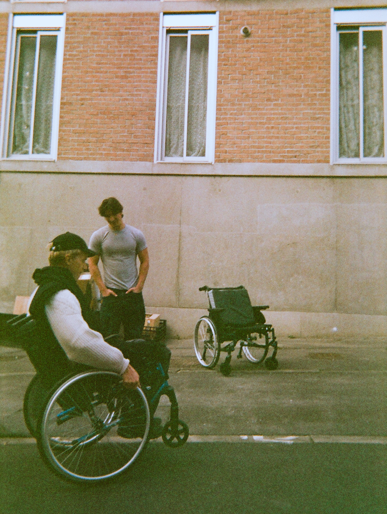
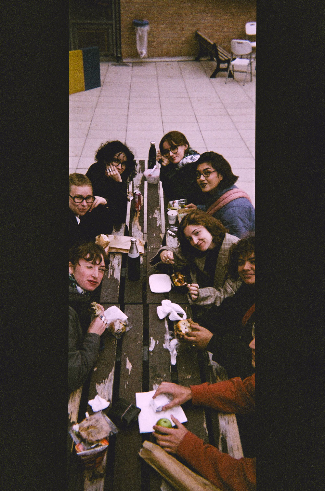
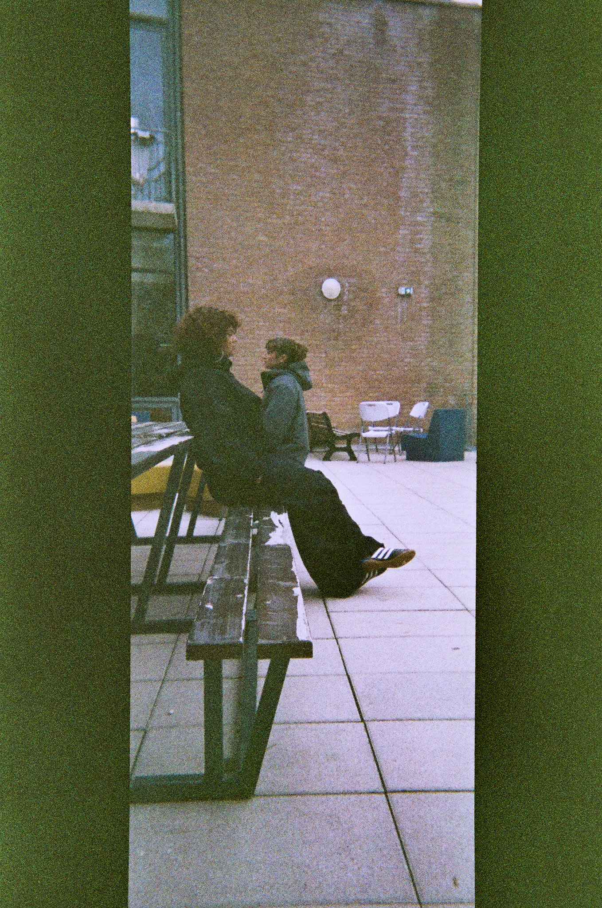
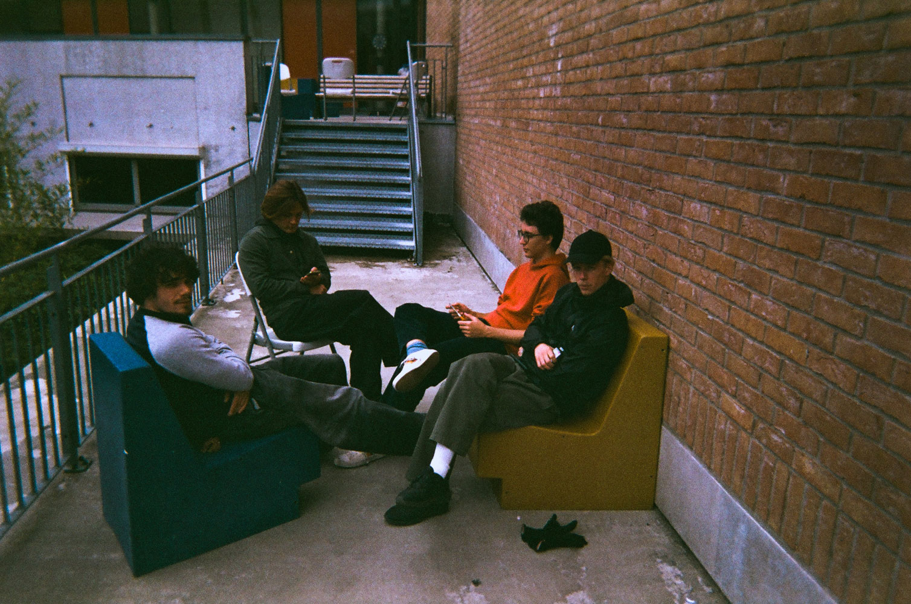
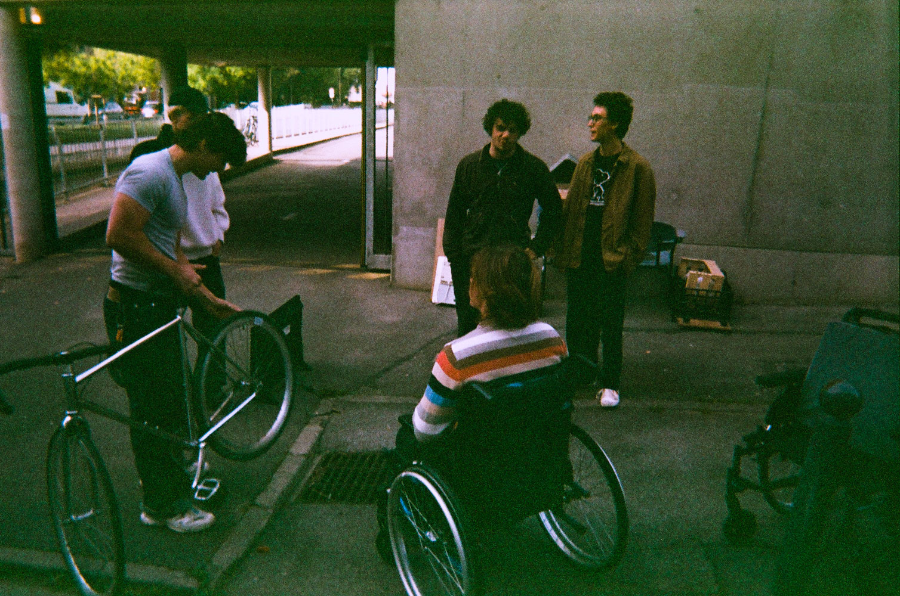
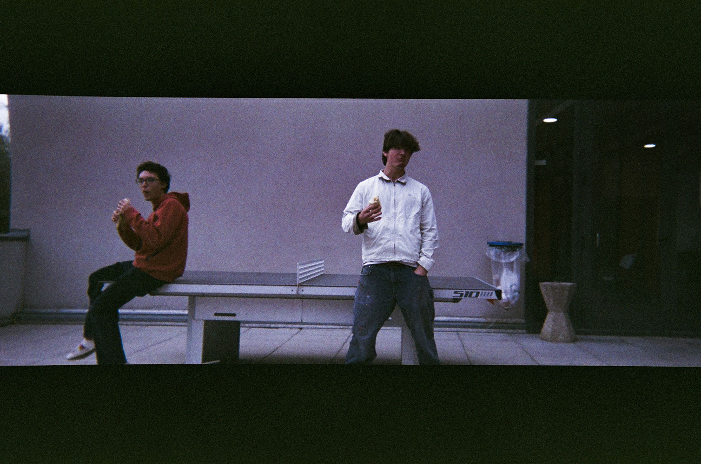